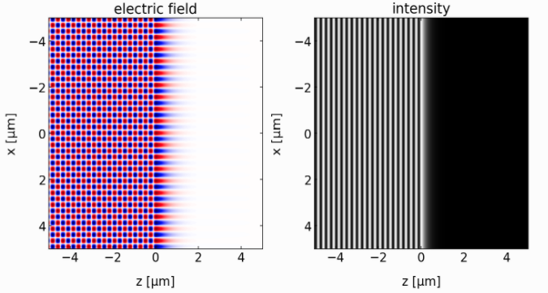
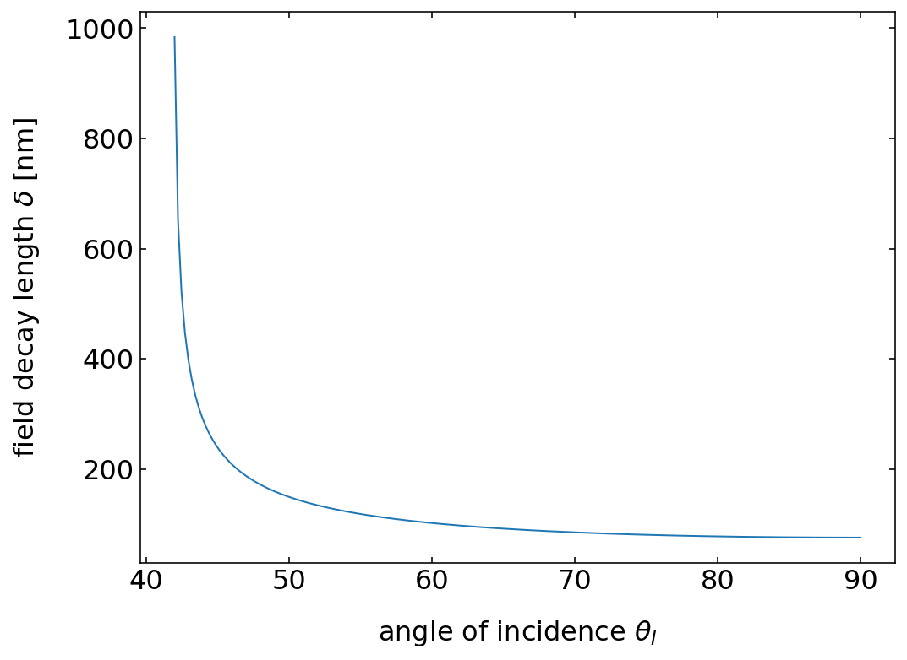
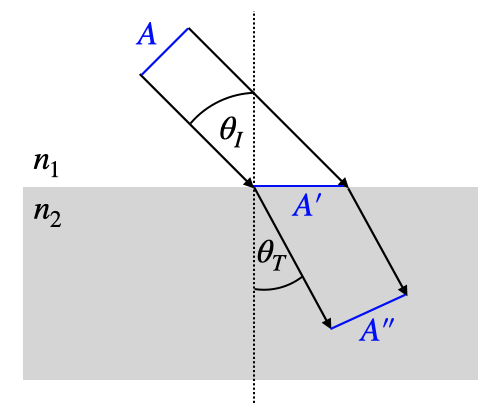

This page was generated from `/home/lectures/exp3/source/notebooks/L18/Fresnel Equations.ipynb`_.

Fresnel Equations¶
In the last lecture, we have discussed the mathcing of the frequency and the wavevector at an interface between the two materials. We no also need to have a look at the matching of the electric field amplitudes at the boundaries.
Reflection¶
s-polarized light
We would first like to have a look at light that is polarized perpendicular to the incident plane - so-called spolarized light. According to our previous definition, s-polarized light is directed along the y-axis of our coordinate system. The incident light amplitude is therefore written as
This electric field vector is perpendicular to the plane of incidence. With this polarization the reflected and the refracted electric field also have to have this polarizations and thus
and
From this it also follows that at the boundary, the incident and the reflected field must be the same as the transmitted field in our matching condition. This is due to the fact that s-polarized light it always parallel to the interface.
The magnetic field lies then in the plane of incidence as it is perpendicular to \(\vec{k}_I\) and \(\vec{E}_I\). It has components parallel \(||\) and perpendicular \(\perp\) to the interface. The tangential components as well as the perpendicular ones are conserved so we can write for the tangential ones
Given the fact that
and that all three vectors are orthogonal we can use the relation \(B=E/v\) for the magnetic and electric field amplitudes and \(\theta_I=\theta_R\) to obtain
With the help of the condition matching above we can replace the transmitted electric field \(E_T\) and using \(v_1=c/n_1\) and \(v_2=c/n_2\) we finally find
This is the Fresnel coefficient for the reflection of s-polarized light \(r_s\). If we replace not the transmitted but the refletec electric field in the formula above, we may obtain the Fresnel coefficient for the transmission of s-polarized light \(t_s\)
p-polarized light
If the electric field is parallel to the plane of incidence, the we need to split it into parallel \(||\) and perpendicular \(\perp\) components. The incident field may be written as
where \(\hat{e}_z\) and \(\hat{e}_x\) are the unit vectors in the z- and x-direction, respectively. The first term is the normal component to the boundary and the second the parallel component. We may pick our the parallel part, for which we know that the electric field is just continuous across the interface.
Now the magnetic field is perpendicular to the plane of incidence and we may write
for the matching condition of the magnetic field. From this follows that
We may now replace again the transmitted field, which results finally in the Fresnel coefficient for the reflection of p-polarized light \(r_p\)
Finally, we may also do the same for the Fresnel coefficient of the transmission of p-polarized light \(t_p\)
Fresnel Equations
The Fresnel equations give the relations for the amplitude of the transmitted and reflected electric fields to the incident electric field amplitude as a function of the angle of incident and the light polarization.
s-polarization
p-polarization
Air to Glass¶
Lets discuss the results we obtained with the help of specifc examples. We will consider the interface between air (\(n_1=1\)) and glass (\(n_2=1.5\)) and vary the angle of incidence. The transmission angle can the be obtained from Snell’s law \(n_1\sin(\theta_I)=n_2\sin(\theta_T)\). Besides the Frensel coefficients, we plot also the phase. This phase gives us an idea about possible phase changes upon reflection and refraction. We have previously assume for example, that under normal incidence we obtain a phase jump of \(\pi\) upon reflection when coming from air to glass. This is something we may check now.
To do so, we just represent the complex Fresnel coefficients as \(r_s=|r_s|e^{i\phi}\)

Fig.: Fresnel coefficients (left) and phase (right) of the reflected light observed for the reflection at an air(\(n_1=1\))/glass(\(n_2=1.5\)) interface.
The above graph displays the reflection coefficients \(r_s,r_p\) as a function of the angle of incidence. The value of \(r_s\) is negative for the whole range indicating the there is a phase jump by an angle of \(\pi\) as we assumed already in the thin film interference section. This phase jump is also confirmed in the second plot on the right. Note that that reflection coefficient for the parallel polarization \(r_p\) is positive up to an angle of about \(56^{\circ}\). This also means that there is no phase jump for this component up to this angle. Beyond this angle we find also a phase jump of \(\phi\). Note that normal incidence \(\theta_I=0\) is a special point, where all incident electric field are tangential to the interface. So also \(r_p\) will be negative at that point and for this incident angle there is no plane of incidence definition.
The special angle where the \(r_p=0\) is called the Brewster Angle. It is special since at this angle of incidence unpolarized light will be turned into completely s-polarized light in reflection. This also means that you can get rid of a reflection from an air/glass interface, when observing this interface with a linear polarizer.

Fig.: Reflections observed with linear polarizer.
Following the Fresnel formula for \(r_p\), the reflection coefficient becomes zero when \(n_2\cos(\theta_I)=n_1\cos(\theta_T)\). Using Snells law as well, we find that
and thus the following definition for the Brewster angle (\(\theta_B\))
The Brewster angle arises from the fact that the dipoles which are induced by the incident light in the material oscillate along the direction of the reflected light. We will see later that dipoles do not emit light along its oscillation direction and hence, there is no reflection for the in plane polarization.
Brewster Angle
The Brewster angle is the angle under which the reflection of light with a polarization in the plane of incidence vanishes.
Brewsster Pyramid


Fig.: Reflections from a pyramid observed with linear polarizer. The pyramid sides are arranged at an angle, which corresponds to the Brewster angle. If polarized light in a certain direction is falling on the pyramid faces, the reflection disappears.
Reflection Removal

Fig.: Reflections from surfaces which are observed under an angle are often partially polarized such that the observation with the help of a polarizer (e.g. in photography), can greatly reduce the highlights from reflections and make objects behind windows visible.
Glass to Air¶
If we invert the order of the materials and have light incindent to a glass/air interface we observe a new effect in the total internal reflection of light. First of all the p-polarization obtains now a phase shift by \(pi\) up to the Brewster angle, which is now at \(33^{\circ}\), when it gets back in phase with the incident light. The s-polarized light has no phase jump at the interface, yet both components reach a magnitude of \(1\) at the critical angle of total internal reflection \(\theta_C\). Starting from this incident angle, all light is reflected by the glass/air interface. As we know from the geometrical optics, the angle of total internal reflection is obtained when the transmission angle becomes \(90^{\circ}\).
For the glass/air interface as shown below, this total internal reflection occurs for an angle \(\theta_C=41.8^{\circ}\). While the magnitude of the reflections coefficient is then \(1\), the phase of the reflected light changes continuously from \(0^{\circ}\) to \(90^{\circ}\).

Fig.: Fresnel coefficients (left) and phase (right) of the reflected light observed for the reflection at an glass (\(n_1=1.5\)) /air (\(n_2=1\)) interface.
We will investigate the transmitted light in the case of total internal reflection below in the transmission section. You will see in the images below also, that the on the reflection side a standing interference pattern is observed, due to the superposition of incident and reflected wave.

Fig.: Total internal reflection of microwaves by a prism.
Transmission¶
As compared to the reflection, the transmission of light is more or less boring.
Air to Glass¶
The transmission of light from air to glass only changes weakly the intensity, except for large angles of incidence. Also the phase angle is not changed at all upon transmission.

Fig.: Fresnel coefficients (left) and phase (right) of the transmitted light observed for the reflection at an air(\(n_1=1\))/glass(\(n_2=1.5\)) interface.
Glass to Air¶
The situation, however, becomes a bit more interesting the the case of the transmission of light from glass to air. The first thing we notice here is that the Fresnel coefficients for transmission \(t_s,t_p\) are both bigger than one and even grow to larger values at the edge of total internal reflection. This seems to say that the amplitude of the electric field that is transmitted is bigger than the one incident. This is in fact true, but does not violate energy conservation, but is rather resulting from the changed speed of light in the glass. We will have a closer look at the intensities down below.

Fig.: Fresnel coefficients (left) and phase (right) of the transmitted light observed for the reflection at an glass (\(n_1=1.5\)) /air (\(n_2=1\)) interface.
Another thing that is occuring but not directly visible is the electric field amplitude in the region directly behind the glass interface in air. Even though all of the light is reflected, this does not mean that no electric field may exist on the transmission side. In fact, an electric field is present and will decay in amplitude exponentially. To see what is happing directly behind the interface we
What is interesting for the total internal reflection is now the electric field that exists on the side, where usually the transmission would go. Here is our coordinate system again such that we can have a look at the wavevectors in the different regions.

Fig.: Coordinate system for wave at interfaces.
The wavevector in the transmission region is given by
Accordining to the condition that the tangential component of the wavevector is conserved we can write down
where \(\omega\) is the frequency of light and \(v_1\) the phase velocity in medium 1, which is in this case glass. Besides the tangential component of the wavevector we can also calculate the magnitude square of the wavevector that is transmitted, which is
Since the wavevector is in the x-z plane we may calculate the x-component from
\begin{eqnarray} \vec{k}_T\cdot \hat{e}_x&=&\pm \sqrt{|\vec{k}_T|^2-(\vec{k}_T\cdot \hat{e}_z)^2}\\ &=&\pm \frac{\omega}{v_2}\sqrt{1-\frac{v_2^2\sin^2(\theta_I)}{v_1^2}}\\ &=&\pm \frac{\omega}{v_2}\sqrt{1-\frac{n_1^2\sin^2(\theta_I)}{n_2^2}} \end{eqnarray}
The last equation will yield a negative value under the square root
which is in fact the region, where total internal reflection occurs. If this is the case, the transmitted wavevector along the x-direction will be imaginary and we may write
where \(\alpha\) is the given by
and is a positive number due to a little trick taking the negative value of the previous square root term. We may now use this wavevector with the x- and the z-component and insert that in our plane wave, which would be propagating in the transmission region (here air).
Inserting the results for the components of the wavevector obtained above yields
The imaginary -xcomponent of the wavevector is creating a real valued factor for the amplitude of the electric field in the transmission region. The electric field in this region is decaying exponentially with the distance \(x\) from the interface. Yet, the field is only osciallting along the interface but not in the x-direction. Such an exponentially decaying field without oscialltion is called evanescent wave. Equivalent exponential decays do also exist in quantum mechanics, however, they concern in this case the decay of the probability to find a particle inside a region.
The image below shows the electric field (left) and the intensity (right) for the total internal reflection at a boundary between glass and air, which the exponential decay is nicely visible for the electric field. To calculate the intensity, we would have to calculate the Poynting vector. As it turns our, the Pyonting vector is zero in the transmission region and hence there is no energy flow in the transmission region. Nevertheless, there is a time oscillating electric field and we may calculate the magnitude square of the electric field decay, which is shown in the right figure.

Fig.: Total internal reflection at a glass/air interface (at \(z=0\)). The left image shows the electric field amplitude, the right image the square magnitude of the electric field amplitude.
To gain a bit more insight into the lengthscale on which the electric field is decaying, we may have a look at the prefactor in the above exponential term. This prefactor denotes an inverse length scale, i.e.
and measures the distance on which the electric field decayed to \(1/e\). The plot below shows that the decay length for the electric field amplitude quickly drops with increasing incident angle

Fig.: Decay length of the electric field amplitude in the transmission region for total internal reflection at a glass/air interface with a wavelength of 532 nm.
The evanescent field in the transmission region can be converted back into a propagating wave if a second interface is brought in the range of the evanescent wave. This can be demonstrated easily with microwaves, since their wavelength is long.

Fig.: Total internal reflection of microwaves by a prism (left).
In the visible region, this decay length is on the order of a feww 100 nanometers. Evanescent field play an important role for optical microscopy for example, where they are either used in total internal reflection fluorescence microscopy (TIRF), exciting only a tiny sheet above an interface and thus reducing fluorescence background. Other techniques use the evanescent field on tiny tips as sources for excitation of fluorescence or scattering (NSOM). Evanescent waves are also used for coupling light into small mechanical resonators to cool them to extremely low temperatures (opto-mechanics).
Intensities of Reflected and Transmitted Waves¶
So far we calculated the Fresnel coefficients, from which we may obtain the electric and magnetic field amplitudes of the reflected and transmitted waves. We now want to calculate the intensities. The Poynting vector of a wave is given by
The magnitude of the Pyonting vector is therefore given by
The intensity is then obtained from the integration over one cycly of oscialltion, which finally results in
With the help of this equation it can be seend that the reflected intensity and the incident intensity contain the same refractive index. thus only the magnitude square of the Fresnel coefficients for the reflection is importnat giving
which is valid for either s- or p-polarization.
For the transmission we have to be a bit more careful as first of all the light propagates with different phase velocities (refractivi index \(n\)) and the cross section of a beam changes due to the refraction at the interface as shown in the image below.

Fig.: Relevant areas for the calculation of the intensities from the transmission Fresnel coefficients.
The two cross-section behave as
The intensities directly contain the refractive index and this
As energy conservation is valid, the reflected energy and the transmitted energy have to sum up to the incident energy in nonabsorbing media, which states that